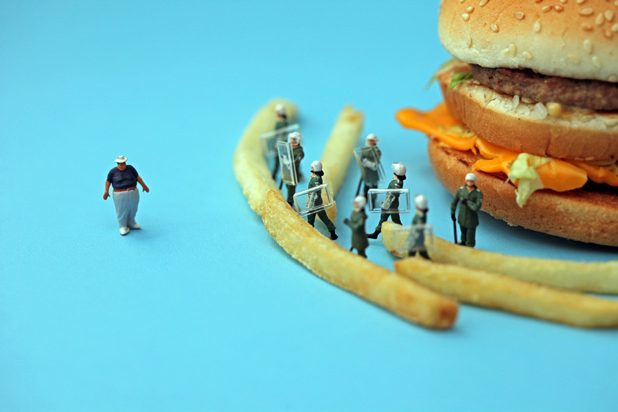

06/23/2011 09:45:14 ¶ ●  Barricade challenger “It was the precise moment that Frankie knew those advanced judo lessons were really going to pay off.” Disparity Series by Christopher Boffoli #photography #food #models